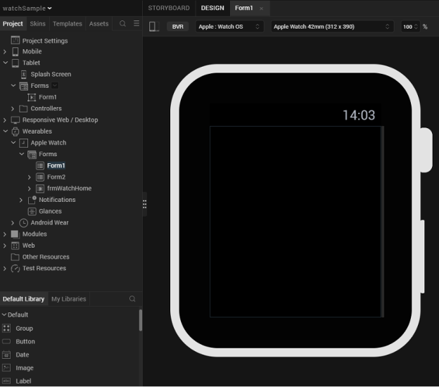

Creating Apple Watch Applications in Volt MX Iris
With Volt MX Iris, you can create your entire iOS app from end to end. Specifically, you can write an iOS app that runs on a user's iOS device, you can add your Watch app's business logic in the WatchKit Extension, and you can design the entire user interfaces of both the iOS app and the Watch app. The user interfaces for both your iOS app and your Watch app are forms and widgets that you simply drag and drop onto the Iris palette. For information about which user interface objects are supported on the watch, please see Watch Applications, Forms, and Widgets.
Adding a Watch App to your Volt MX Iris Project
In Volt MX Iris, Apple Watch apps can be added to your current project in the same way as a mobile, desktop, or tablet. In Iris's Project Explorer pane, you will see that in addition to the Mobile, Tablet, and Desktop channels, there is also a Apple Watch channel displayed under Wearables, as shown in the following illustration.
If you do not see Watch channel, right click on the project name in the Project Explorer, select “Filter” and ensure that “Wearables” is selected.
An Apple Watch app can be built by adding forms and user interface objects to the Watch channel. The ability to interactively build both an Apple Watch app and its associated iOS app interactively provides a simple, integrated, and intuitive method of creating an integrated phone and watch application.
In addition, when you build your Apple Watch app project, you also need to select Apple Watch apps in the build settings in Volt MX Iris, as shown below.
Apple Watch Forms and Widgets
An Apple Watch app's user interface is created with forms and widgets. There are two types of forms in a watch application: App forms and Notification forms.
App forms can be added by right clicking on “Forms” in the Apple Watch channel in the Project Explorer, and selecting “New Form”.
Navigation forms can be added by right clicking on “Notifications” in the Apple Watch channel in the Project Explorer, and selecting “New Notification”.
An Apple Watch application cannot dynamically create forms at run time. You must add all forms the app needs in Iris at design time. If your app has more than one form, it can dynamically select which form it will display at any given time.
Notification forms can be either static or dynamic, meaning that they can contain either static content that does not change, or they can hold dynamic information that changes.
Iris supports the following widgets for Apple Watch applications:
- Button
- Date
- Group: horizontal and vertical
- Image
- Label
- Line
- Map
- Segment
- Slider
- Switch
- Timer
Apple Watch Templates
To help build the user interface for your app, Volt MX Wearables for Apple Watch supports templates for Segment widgets. For example, the sample app shown in the figure below has a Segment widget on its Form2 form.

To use a template with the Segment widget, select the Templates tab, as shown below.

The Templates tab displays a list of all of the available templates in your project and enables you to add templates for each channel. In this example, there is one segment template (segTemp) for the Apple Watch channel. It contains a single group.
In templates, you can add any supported widgets. These will be applied to segments that use the template and displayed in the UI when your app displays the segment. Templates can be applied to a segment using the following steps:
-
Select the Project tab of the Project Explorer and select the segment.

-
In the Properties pane, select the Segment tab.
-
Select the template to apply to the segment in the Row Template dropdown.
Apple Watch Actions
Note: Actions other than Add Swift Snippet are only supported for Apple Watch on V9 Servicepack 5 Fixpack 15 or later.
Adding actions enables you to build business logic into your Apple Watch application. Apple Watch actions are typically event handlers that are triggered by user interactions with the UI, but they can also be callbacks that are invoked by notifications. You add an action to a form or widget with the following steps.
- Select the Action tab in the Properties pane, as shown below. If there is no Action tab, no actions are supported by the selected form or widget.

- The Action tab displays the list of actions that the form or widget supports. Click the Edit button next to the action you wish to add or edit. Volt MX Iris displays a list of actions. For more information on available actions, see the Categories of Actions documentation.
Apple Watch Modules
If your app requires long swift snippets, consider putting them into a function in a Swift code module. Your app can call the function from an action's code snippet. Create a Swift code module by right clicking on the Apple Watch folder under Modules/Wearables in the Project Explorer and select New Swift module.
You can put any valid code in your custom Swift modules that your app needs. This includes classes, methods, constants, module global variables, or whatever else you may need to write your app.
Communication Between the iPhone App and the WatchKit Extension
Watch apps are paired with iPhones via Bluetooth. Watch apps send information requests to their respective iOS apps by calling the sendMessage:replyHandler:errorHandler: method, which is in the WCSession class in the Apple Watch Connectivity API. In addition to using the sendMessage:replyHandler:errorHandler: method for information requests, your watch app can invoke it to perform time-consuming tasks such as network calls. In these cases, the watch application relies on the iOS application to execute the business logic. Calling the the sendMessage:replyHandler:errorHandler: method wakes the parent application up in the background (if it is not already running in the foreground), executes the operation, and returns the data that the Watch application needs. The watch callback method that handles the WatchKit request must return immediately or nearly immediately.
To fetch data from the iOS app, the Watch app calls sendMessage:replyHandler:errorHandler: in accordance with the Apple guidelines for using the WCSession class. The following example demonstrates how the Watch app fetchs data from the iOS app.
<Class Start>
import Foundation
import WatchConnectivity
import WatchKit
class PhoneCommunicator : NSObject, WCSessionDelegate {
static var sharedInstance:PhoneCommunicator? = nil;
var session:WCSession? = nil;
override init() {
super.init();
session = WCSession.defaultSession();
if(session!.delegate == nil){
session!.delegate = self;
session!.activateSession();
}
}
class func getSharedInstance() -> (PhoneCommunicator) {
if(sharedInstance == nil){
sharedInstance = PhoneCommunicator();
}
return sharedInstance!;
}
func pingPhone() {
if WCSession.isSupported() {
print("session is supported on watch");
if(session!.reachable){
print("session reachable on phone");
session!.sendMessage(
["requestId": "sayHello"],
replyHandler: {
(response) -> Void in print("in reply handler");
print("\(response["reply"]!)");
},
errorHandler: {
(error) -> Void in print("in error callback");
print("\(error)")
}
)
}
}
}
}
<Class End>
REQUIREMENTS
This feature is available for all iPhone and Apple Watch OS versions supported by Volt MX. Your application must have at least one mobile form and one Apple Watch form. Not supported for Android devices.
ENABLING WATCH CONNECTIVITY
Note: Low code watch connectivity is only supported for Apple Watch apps paired with an iOS app on V9 Servicepack 5 Fixpack 15 or later.
Volt MX now supports adding Watch Connectivity support in a low-code way. To enable Watch Connectivity, follow these steps:
- Open the Project Settings
- Navigate to Native -> Watch
- Select the option for Enable Watch Connectivity and press the Done button

When Watch Connectivity support is turned on, two new files are created and added to your project: WatchConnectivity.js and WatchConnectivity.swift.
WatchConnectivity.swift provides methods that can be used to send requests to your companion iPhone application.
WatchConnectivity.js provides the structure for processing requests received by the iPhone app. These files are read-only, as they do not need to be edited directly.
SENDING REQUESTS TO THE COMPANION PHONE APP
Note: Low code watch connectivity is only supported for Apple Watch apps paired with an iOS app on V9 Servicepack 5 Fixpack 15 or later.
For any operations that require significant processing time, Apple recommends that they be performed on the companion iPhone application instead of on the Apple Watch application. To request information from the companion app, use the Send Watch Connectivity Request action. This action is available for Apple Watch Forms and Widgets (this action is not supported in Glances or Notifications). The Send Watch Connectivity Request action takes in two parameters: a string key, and a collection of information. These are passed to the phone to perform the necessary operation according to the key value. Similar to other actions, the Send Watch Connectivity action has code paths for success and failure responses, as well as the default code path that continues to execute while the companion app processes the request.

PROCESSING REQUESTS IN THE COMPANION PHONE APP
Note: Low code watch connectivity is only supported for Apple Watch apps paired with an iOS app on V9 Servicepack 5 Fixpack 15 or later.
To set up the companion iPhone application to process this request, navigate to Mobile App Events by tapping on the Mobile channel. Select Edit for the Watch Connectivity App Event.

This action sequence takes in a string key (key), a collection of information (info), and a reply handler (replyHandler). The key and info variables will be the key and info provided via the Send Watch Connectivity Request action on the watch form/widget. The reply handler is the handler that corresponds to the success and failure code paths for the Send Watch Connectivity Request action.

The key can be used to differentiate between multiple different actions that the mobile app may be expected to perform. Code generated here will be called when the companion app receives a request from the watch. If your companion app will need to process multiple types of requests from the watch, it is recommended that you start this action sequence by checking the key to see if it matches one of your expected actions. When the request has been successfully processed, the Send Info to Watch action can be used to send any relevant information back to the watch’s reply handler. This method takes in a collection of information and a reply handler. The reply handler that is a parameter for the Watch Connectivity action sequence should be used.
Handling Notifications
Apple Watch apps can respond to both local notifications and remote notifications. They are processed by the iOS app that is paired with the Apple Watch app. iOS decides whether to send the notifications to the watch or phone. For more information, see Apple’s documentation.
To process notifications, you must create the appropriate notification forms for the Apple Watch app.
CREATING NOTIFICATIONS ON THE WATCH
To create notifications, use the following steps:
- Right click the Notifications node in the Volt MX Iris Project Explorer under Wearables/Apple Watch.
- In the menu that appears, click New Notification. By default, this creates a static notification. It can only display information and alerts.
- If you want to change the notification to a dynamic notification, which can have interactive elements such as buttons, select the notification that you created in step 2.
- Use the down arrow next to the name of the notification to pull down the context menu and click Create Dynamic Notification, as shown in the following illustration.
Volt MX Iris adds a new node for the dynamic notification form to your project, as depicted in the illustration below.

When you create a dynamic notification form, the form can receive events. Therefore, you can add event handlers to the form by clicking the Action tab in the Properties pane, and then choosing the Edit button followed by Add Swift Snippet.
PROCESSING NOTIFICATIONS
Notifications are processed by the iOS app that is paired with your Watch app. Your app processes local notifications using the functions in the voltmx.localnotifications namespace. Your iOS app does not have to register for local notifications.
To process remote notifications, it uses the functions in the voltmx.push namespace. When your iOS app starts, it must register for the remote notifications that it needs to receive by invoking the voltmx.push.register function. It can then get its notifications using the voltmx.push.getMessages and voltmx.push.getMessageCount functions. You can also use the voltmx.push.setCallbacks function to set the notification handlers for the notifications you want to process.
ADDING NOTIFICATION HANDLERS
You add notification handlers in your Swift code by selecting the Action tab in the Properties pane, and then choosing the Edit button followed by Add Swift Snippet. Your code must handle the notifications in accordance with Apple guidelines. For more information, please see the following Apple documentation.
Many notification event handlers have a parameter named completionHandler, as indicated by the red circle in the figure below.

The completionHandler parameter contains a callback function that your event handler must call upon successful completion in order for the event to be handled properly. This call must be placed at the end of your event handler. Failure to invoke the completionHandler function results in undefined behavior.
How to Create a Sample Watch App on iOS
This walkthrough provides a brief introduction on how to create Watch apps for iOS.
BEGINNING THE SAMPLE WATCH APP
When you build your own watch app, it must be built in conjunction with an iOS app. So the first step is to create an iOS and/or iPadOS app in Iris. To do so, add forms and code to the Mobile and/or Tablet in the Volt MX Iris Project tree, as the following illustration shows.
You must ensure that your iOS/iPadOS app has at least one form or your app will not build.
If you need information on creating iOS/iPadOS apps in Volt MX Iris, please see the VoltMX Widget Programmer's Guide and the VoltMX Iris API Developer's Guide.
In the Volt MX Iris Project tree there is an additional platform (also called a channel) that is specifically for the watch. This channel, named Apple Watch, contains sub-items for forms and notifications.

ADDING FORMS TO THE SAMPLE WATCH APP
You can design a user interface for your watch app by dragging user interface objects and forms from the Widgets list in the lower left of the Iris screen and dropping them onto the Forms node.

In this figure, you can see that the watch app has a single form, which is highlighted in the Project tree on the left. This is a container form that you can drag other widgets into.
Like any other type of application built with Volt MX Iris, Watch apps can have multiple forms. Each form can contain a variety of user interface objects, such as buttons, labels, sliders, and etc.
ADDING ACTIONS TO THE WIDGETS AND FORMS
Note: Only Add Swift Snippet is supported on versions older than V9 Servicepack 5 Fixpack 15.
As with forms and widgets in other types of applications, forms and widgets in a watch app can respond to actions. For example, if your Watch app contains a button, you can add an event handler action to have the button widget process user interactions.
To do so, click on the Action tab in the Properties pane, as shown below.
To add code for an action such as a Button widget's onClick event handler, use the following procedure.
- Select the widget for which you want to add the event handler in the Project tree
- In the Properties pane, click the Action tab.
- Click the Edit button in the Action pane of the Volt MX Iris Properties window.
- The Action Editor appears. Click the Navigate to Form action. For more information on how to use the action editor, see the Add Actions documentation.
- When you click Navigate to Form, Iris opens a window for you to define the name of the form to which you will navigate when the button is pressed.

Notice in the preceding figure that Navigate to Form has been added to the list of actions that respond to the button's onClick event. The onClick event for a button takes one parameter, called form, that contains the button's form. - Click Save to save the action sequence.
ADDING NOTIFICATIONS TO THE SAMPLE WATCH APP
You can add notification forms by clicking the notification in the Project tree and selecting the down arrow to pull down the context menu. From the context menu, choose New Notifications.

When you do, a notifications form will be added to your app. In this example, we will create a form for the fictional Watch Sample app.
As with regular forms, you can drag user interface objects onto your notification form. Because they display primarily only static information, the palette of user interface objects that are available for notification forms is more limited than with regular forms.
To add a dynamic notification, simply select a notification form, click on its down arrow, and select Create Dynamic Notification from the context menu.

Note: Each static notification in your app can have at most one dynamic notification associated with it.
BUILDING THE SAMPLE WATCH APP
When you have finished adding widgets, actions, code snippets, and code modules to your app, you can build it by selecting Build from the Volt MX Iris main menu. Next, click Build Native Local. The Volt MX Iris Build Native Local dialog box appears. In this dialog box, you must check iOS to build your Watch app's parent iOS app. You must also check iOS under Wearables to build your Apple Watch app.

If the app builds correctly, Volt MX Iris outputs a .KAR file. The .KAR file contains the storyboards for your app, the code for the actions and other event handlers, and any code that you added in custom Swift modules.
To compile, debug, and run your app, you must extract the .KAR file and load it into Xcode. With your app in Xcode, you are ready to compile and debug it. If you make changes to your app's code in Xcode, it is recommend that you copy the changes back into the code editor in Volt MX Iris.
Internationalizing Watch Applications
Apps for Volt MX Wearables can be customized for international use. In particular, you can define different strings that your app can use in its user interface for different locales. There are two ways to do this. First, you can define locale strings using Volt MX Iris. Second, you can add them to your app programmatically.
To define locale strings in Volt MX Iris, use the following steps.
- Select Edit from the main menu, and then choose Internationlization(i18n), as shown in the figure below.
- In the dialog box that appears, enter the keys for the text you want to localize, as shown in the following figure. Use the plus symbol at the right of the dialog box to select the languages that you want to localize for. For each language that you add, enter the localized string. Click Finish. The Configure Internationalization dialog box closes.

- Select the widget whose UI text you want to localize.
- In the Properties pane, select the key you create in step 2.

For example, if you created a key called sKey, selected the locales, and entered the localized strings in step 2, you would then select a widget as instructed in step 3. The Properties pane for the label widget would look similar to the figure above. You would next select the key sKey in the Text i18n Key field. The result would be that, instead of the string "Label" being used for the Label widget's label when you app runs, your app would automatically use the localized strings if the app was being on a device is set to one of the locales you chose in step 2.